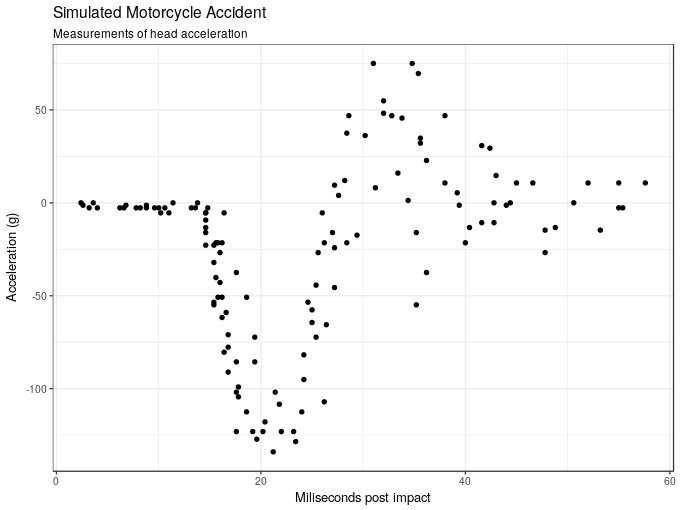
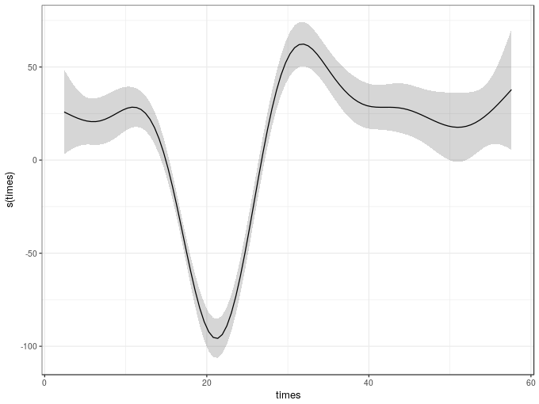
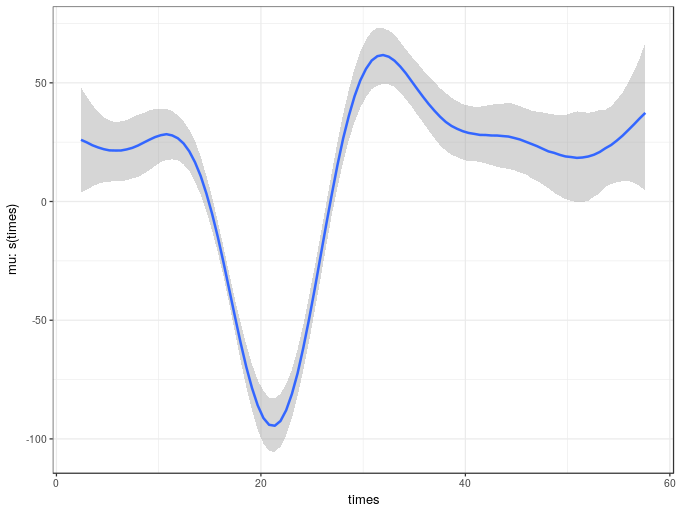
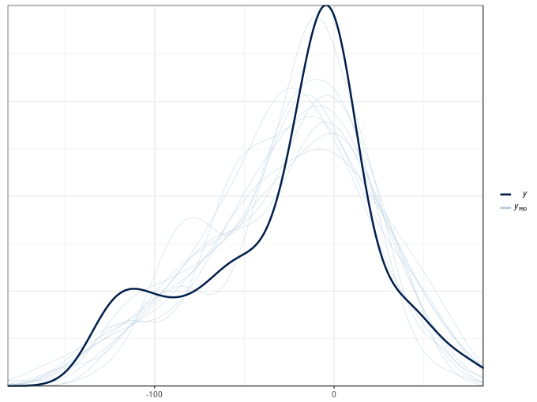
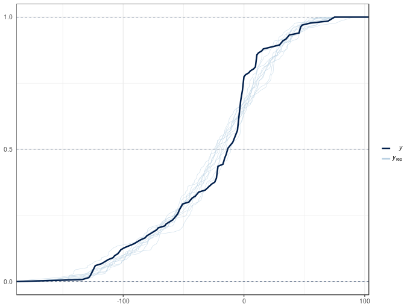

Fitting GAMs with brms: part 1
a simple GAM
Regular readers will know that I have a somewhat unhealthy relationship with GAMs and the mgcv package. I use these models all the time in my research but recently we’ve been hitting the limits of the range of models that mgcv can fit. So I’ve been looking into alternative ways to fit the GAMs I want to fit but which can handle the kinds of data or distributions that have been cropping up in our work. The brms package (Bürkner, 2017) is an excellent resource for modellers, providing a high-level R front end to a vast array of model types, all fitted using Stan. brms is the perfect package to go beyond the limits of mgcv because brms even uses the smooth functions provided by mgcv, making the transition easier. In this post I take a look at how to fit a simple GAM in brms and compare it with the same model fitted using mgcv.
In this post we’ll use the following packages. If you don’t know schoenberg, it’s a package I’m writing to provide ggplot versions of plots that can be produced by mgcv from fitted GAM objects. schoenberg is in early development, but it currently works well enough to plot the models we fit here. If you’ve never come across this package before, you can install it from Github using devtools::install_github('gavinsimpson/schoenberg')
## packages
library('mgcv')
library('brms')
library('ggplot2')
library('schoenberg')
theme_set(theme_bw())To illustrate brms’s GAM-fitting chops, we’ll use the mcycle data set that comes with the MASS package. It contains a set of measurements of the acceleration force on a rider’s head during a simulated motorcycle collision and the time, in milliseconds, post collision. The data are loaded using data() and we take a look at the first few rows
## load the example data mcycle
data(mcycle, package = 'MASS')
## show data
head(mcycle) times accel
1 2.4 0.0
2 2.6 -1.3
3 3.2 -2.7
4 3.6 0.0
5 4.0 -2.7
6 6.2 -2.7
The aim is to model the acceleration force (accel) as a function of time post collision (times). The plot below shows the data.
ggplot(mcycle, aes(x = times, y = accel)) +
geom_point() +
labs(x = "Miliseconds post impact", y = "Acceleration (g)",
title = "Simulated Motorcycle Accident",
subtitle = "Measurements of head acceleration")
We’ll model acceleration as a smooth function of time using a GAM and the default thin plate regression spline basis. This can be done using the gam() function in mgcv and, for comparison with the fully bayesian model we’ll fit shortly, we use `method = “REML” to estimate the smoothness parameter for the spline in mixed model form using REML
m1 <- gam(accel ~ s(times), data = mcycle, method = "REML")
summary(m1)Family: gaussian
Link function: identity
Formula:
accel ~ s(times)
Parametric coefficients:
Estimate Std. Error t value Pr(>|t|)
(Intercept) -25.546 1.951 -13.09 <2e-16 ***
---
Signif. codes: 0 '***' 0.001 '**' 0.01 '*' 0.05 '.' 0.1 ' ' 1
Approximate significance of smooth terms:
edf Ref.df F p-value
s(times) 8.625 8.958 53.4 <2e-16 ***
---
Signif. codes: 0 '***' 0.001 '**' 0.01 '*' 0.05 '.' 0.1 ' ' 1
R-sq.(adj) = 0.783 Deviance explained = 79.7%
-REML = 616.14 Scale est. = 506.35 n = 133
As we can see from the model summary, the estimated smooth uses about 8.5 effective degrees of freedom and in the test of zero effect, the null hypothesis is strongly rejected. The fitted spline explains about 80% of the variance or deviance in the data.
To plot the fitted smooth we could use the plot() method provided by mgcv, but this uses base graphics. Instead we can use the draw() method from schoenberg, which can currently handle most of the univariate smooths in mgcv plus 2-d tensor product smooths
draw(m1)
The equivalent model can be estimated using a fully-bayesian approach via the brm() function in the brms package. In fact, brm() will use the smooth specification functions from mgcv, making our lives much easier. The major difference though is that you can’t use te() or ti() smooths in brm() models; you need to use t2() tensor product smooths instead. This is because the smooths in the model are going to be treated as random effects and the model is estimated as a GLMM, which exploits the duality of splines as random effects. In this representation, the wiggly parts of the spline basis are treated as a random effect and their associated variance parameter controls the degree of wiggliness of the fitted spline. The perfectly smooth parts of the basis are treated as a fixed effect. In this form, the GAM can be estimated using standard GLMM software; it’s what allows the gamm4() function to fit GAMMs using the lme4 package for example. This is also the reason why we can’t use te() or ti() smooths; those smooths do not have nicely separable penalties which means they can’t be written in the form required to be fitted using typical mixed model software.
The brm() version of the GAM is fitted using the code below. Note that I have changed a few things from their default values as
- the model required more than the default number of MCMC samples —
iter = 4000, - the samples needed thinning to deal with some strong autocorrelation in the Markov chains —
thin = 10, - the
adapt.deltaparameter, a tuning parameter in the NUTS sampler for Hamiltonian Monte Carlo, potentially needed raising — there was a warning about a potential divergent transition but I should have looked to see if it was one or not; instead I just increased the tuning parameter to0.99, - four chains fitted by default but I wanted these to be fitted using 4 CPU
cores, seedsets the internal random number generator seed, which allows reproducibility of models, and- for this post I didn’t want to print out the progress of the sampler —
refresh = 0— typically you won’t want to do this so you can see how sampling is progressing.
The rest of the model is pretty similar to the gam() version we fitted earlier. The main difference is that I use the bf() function to create a special brms formula specifying the model. You don’t actually need to do this for such a simple model, but in a later post we’ll use this to fit distributional GAMs. Note that I’m leaving all the priors in the model at the default values. I’ll look at defining priors in a later post; for now I’m just going to use the default priors that brm() uses
m2 <- brm(bf(accel ~ s(times)),
data = mcycle, family = gaussian(), cores = 4, seed = 17,
iter = 4000, warmup = 1000, thin = 10, refresh = 0,
control = list(adapt_delta = 0.99))Compiling the C++ model
Start sampling
Once the model has finished compiling and sampling we can output the model summary
summary(m2) Family: gaussian
Links: mu = identity; sigma = identity
Formula: accel ~ s(times)
Data: mcycle (Number of observations: 133)
Samples: 4 chains, each with iter = 4000; warmup = 1000; thin = 10;
total post-warmup samples = 1200
ICs: LOO = NA; WAIC = NA; R2 = NA
Smooth Terms:
Estimate Est.Error l-95% CI u-95% CI Eff.Sample Rhat
sds(stimes_1) 722.44 198.12 450.17 1150.27 1180 1.00
Population-Level Effects:
Estimate Est.Error l-95% CI u-95% CI Eff.Sample Rhat
Intercept -25.54 2.02 -29.66 -21.50 1200 1.00
stimes_1 16.10 38.20 -61.46 90.91 1171 1.00
Family Specific Parameters:
Estimate Est.Error l-95% CI u-95% CI Eff.Sample Rhat
sigma 22.78 1.47 19.94 25.68 1200 1.00
Samples were drawn using sampling(NUTS). For each parameter, Eff.Sample
is a crude measure of effective sample size, and Rhat is the potential
scale reduction factor on split chains (at convergence, Rhat = 1).
This outputs details of the model fitted plus parameter estimates (as posterior means), standard errors, (by default) 95% credible intervals and two other diagnostics:
Eff.Sampleis the effective sample size of the posterior samples in the model, andRhatis the potential scale reduction factor or Gelman-Rubin diagnostic and is a measure of how well the chains have converged and ideally should be equal to1.
The summary includes two entries for the smooth of times:
sds(stimes_1)is the variance parameter, which has the effect of controlling the wiggliness of the smooth — the larger this value the more wiggly the smooth. We can see that the credible interval doesn’t include 0 so there is evidence that a smooth is required over and above a linear parametric effect oftimes, details of which are given next,stimes_1is the fixed effect part of the spline, which is the linear function that is perfectly smooth.
The final parameter table includes information on the variance of the data about the conditional mean of the response.
How does this model compare with the one fitted using gam()? We can use the gam.vcomp() function to compute the variance component representation of the smooth estimated via gam(). To make it comparable with the value shown for the brms model, we don’t undo the rescaling of the penalty matrix that gam() performs to help with numeric stability during model fitting.
gam.vcomp(m1, rescale = FALSE)Standard deviations and 0.95 confidence intervals:
std.dev lower upper
s(times) 807.88726 480.66162 1357.88215
scale 22.50229 19.85734 25.49954
Rank: 2/2
This gives a posterior mean of 807.89 with 95% confidence interval of 480.66–1357.88, which compares well with posterior mean and credible interval of the brm() version of 722.44 (450.17 – 1150.27).
The marginal_smooths() function is used to extract the marginal effect of the spline.
msms <- marginal_smooths(m2)This function extracts enough information about the estimated spline to plot it using the plot() method
plot(msms)
Given the similarity in the variance components of the two models it is not surprising the two estimated smooth also look similar. The marginal_smooths() function is effectively the equivalent of the plot() method for mgcv-based GAMs.
There’s a lot that we can and should do to check the model fit. For now, we’ll look at two posterior predictive check plots that brms, via the bayesplot package (Gabry and Mahr, 2018), makes very easy to produce using the pp_check() function.
pp_check(m2)Using 10 posterior samples for ppc type 'dens_overlay' by default.

The default produces a density plot overlay of the original response values (the thick black line) with 10 draws from the posterior distribution of the model. If the model is a good fit to the data, samples of data sampled from it at the observed values of the covariate(s) should be similar to one another.
Another type of posterior predictive check plot is the empirical cumulative distribution function of the observations and random draws from the model posterior, which we can produce with type = "ecdf_overlay"
pp_check(m2, type = "ecdf_overlay")Using 10 posterior samples for ppc type 'ecdf_overlay' by default.

Both plots show significant deviations between the the posterior simulations and the observed data. The poor posterior predictive check results are in large part due to the non-constant variance of the acceleration data conditional upon the covariate. Both models assumed that the observation are distributed Gaussian with means equal to the fitted values (estimated expectation of the response) with the same variance \(\sigma^2\). The observations appear to have different variances, which we can model with a distributional model, which allow all parameters of the distribution of the response to be modelled with linear predictors. We’ll take a look at these models in a future post.
Social